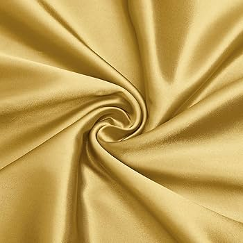

Golden (dorado)
Seda extres
Please appreciate the colors of the available dresses


Colonial streets, balconies overflowing with flowers, and colorful architecture—perfect for elegant photos with historic charm..
Bohemian neighborhood with murals and street art. Ideal for more modern, vibrant, and attitude-filled photoshoots..
Sand, sea and sunset: the sea breeze helps to achieve the "flying dress" effect and cinematic photographs.